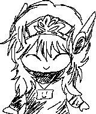

I'm Fossie or just Foss !
I *thoroughly* enjoy gaming, creation like building and drawing, logical things like coding or wiring, and art like photos 'n creating things along with exploring.
Besides that I guess I like to act on the sillier side, messing around and stuff
Apparently I'm pretty easy going, considerate, and usually available, but I struggle with confrontation and get attatched kind of easily, according to others!
If you wanna learn more about me, head over to the infobook for snipbits of my life, and if you wanna be my friend especially check out the friend page!

He / any
19